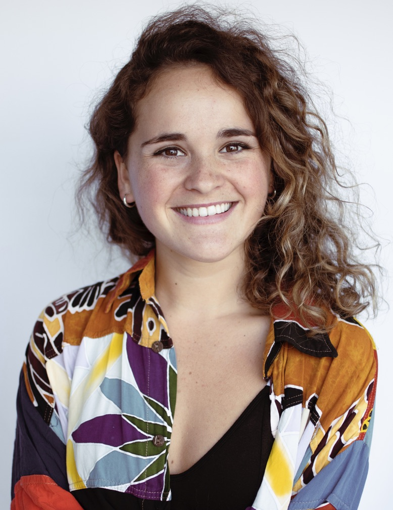

Datos personales
- Nombre completo: Sofia Zirolli
- Fecha de nacimiento: 14/01/1999
- Lugar de nacimiento: Buenos Aires, Argentina
Formacion academica
- 2018 - : Escuela de Actuacion de Agustin Alezzo
- 2020 - 2022: Tecnicatura en Canto en Escuela Mitra
- 2006 - 2016: Michael Ham Memorial College
Experiencia laboral
- 2021 - 2022: Recepcionsita en restaurante
- 2016 - 2021: Maestra de canto
Objetivo
Formarme en un rubro con mucha salida laboral y buenos sueldos para poder mantenerme mientras sigo
buscando mi lugar en el mundo artistico. Cambiar el trabajo de recepcionista por uno con mejor sueldo
con el que pueda pagarme mis estudios artisticos.
Perfil
Soy eficiente, responsable, organizada y trabajadora. Predispuesta al trabajo en equipo y a aprender.
Iniciativa para resolver problemas y aportar nuevas ideas.